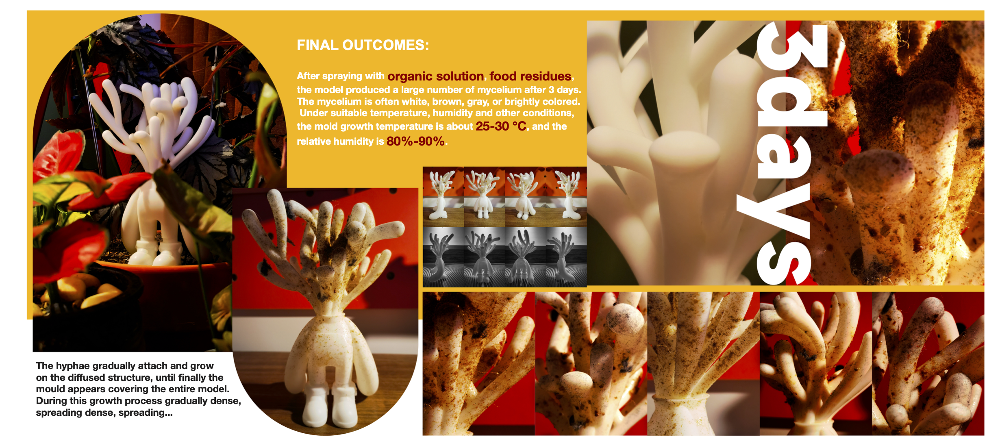
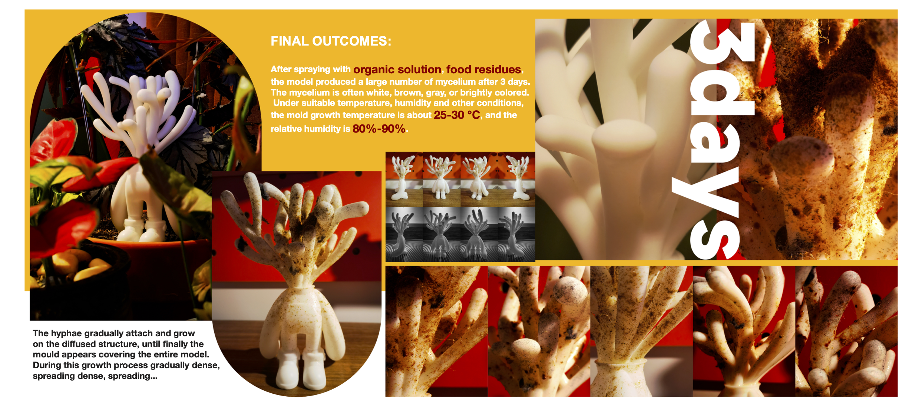

BioTalk
Context:
The exploration and study of biodiversity in nature have been going on for thousands of years, and it is not difficult to find the similarities and differences, order, and chaos in this exploration process. This project visualizes this phenomenon in the universe utilizing character design and also explores the future direction of human beings for the protection of biodiversity.
Time:
Fall 2022
Media:
Rhino&Keyshot;
3D Printing;
Slime mold;
Ideation
"Our world is composed by... Animal & Plant & Fungi & Viruses"
However, each species has its own language — patterns! They can be checkered, curved,
striped,
lumpy, or dotted; they can be cells, tissues, organs, or even the whole body, but all about
patterns. I believe that the patterns and lines between creatures and the environment have
meanings and can represent objective social phenomena, so I want to dig deeper into this
aspect.
Research
"Science is beautiful when it makes simple explanations of phenomena or connections between different observations."

We can see that whether it is growth veins or patterns, although there are many kinds of creatures in nature, many of them have commonalities, and even have very similar textures. However, irregular or asymmetrical objects that appear randomly formed are actually not random from a mathematical perspective. Fractals, which display a very similar pattern over a wide range of scales, are the most common ones in nature (e.g., clouds, waves, trees, mountains, rivers, coastlines).
Interestingly, humans display a range of proficiencies in recognizing natural fractal patterns, perhaps because they are produced by complex nonlinear systems that are not easily discerned or comprehended. Nonetheless, the human brain can naively recognize and even strongly prefer certain types of fractal patterns without people being able to explain why.
Prototype
Final Outcome
 
